|
|
Lesson Contents | In this Lesson, you will learn the basics of creating and editing Process Timelines. |
The Process Timeline functionality of Process Director is what sets it apart. Process Director adds the element of time to process management in a way that nothing else does. Instead of traditional flowchart-based workflows, Process Director's Process Timeline uniquely adds scheduling and predictive capabilities to workflow management.
The Process Timeline may look familiar to you, because it is presented in Gantt chart format. The Gantt chart is a type of chart that places each activity in a process on a single line that is horizontally marked in some increment of time, usually days. Each activity is marked with a bar that whose left end begins at the task's start date, and ends at the task's end date. This type of chart is widely used in project management.
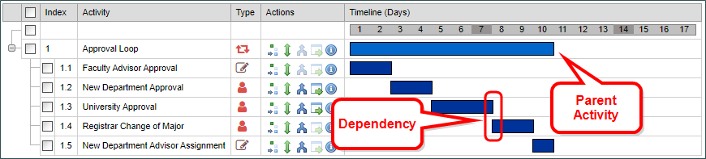
Most activities have a dependence on one or more other activities. Dependence refers to the requirement that an activity cannot begin until a predecessor activity, or activities, ends. This type of relationship (often referred to by project managers as finish-to-start) represents the most fundamental starting condition for any activity.
An activity may also be a parent or child activity. A parent activity is a container for other, subordinate activities, each of which is referred to as a child activity. The child activities begin when the parent activity begins. Once all of the child activities are complete, the parent is complete. Usually, the parent activity has no tasks associated with it. Instead, all of the tasks are associated with the child activities. In the normal course of events, the parent activity merely serves as a convenient method of grouping similar activities.
In Process Director, it is possible for a parent and child activities to have a much more advanced interaction than described here. These interactions are intended to support more specialized and unusual cases, however, so they will be addressed in more advanced lessons.
BP Logix developed the Process Timeline to address the need to measure and predict process execution times. Process Timeline enables organizations to build robust, executable process models within Process Director.
In the previous lesson, we created the Form that will be used to store the information we will need for our Change of Major application. Now that we have that, we need to create the model that will control the execution of the process with a Process Timeline. To do so, we'll navigate to the Student Exercise Folder that contains the Change of Major form we created in the last lesson. Once we have done so, we'll select Process Timeline from the Create New menu.
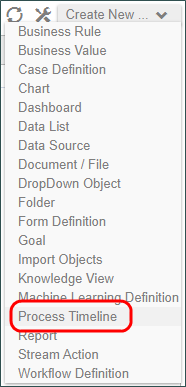
The Create New Timeline Dialog will appear. Let's type "Change of Student Major" into the Process Timeline Name property box, then click the OK button to create the Process Timeline.
The new process Timeline will be blank, so we need to add a Timeline activity by clicking on the Create Activity link three times to create three activities.
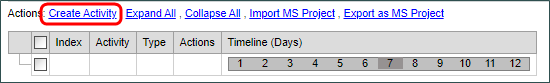
Once we've done so, we'll see a new activity, named Activity 1, appear in the Gantt Chart. Now we can begin configuring the activity.
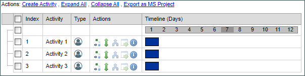
There are several properties that we must configure for each activity, but lets first address how to change this parallel execution.
Timeline Activities, as this creation process demonstrates, are inherently parallel. Which is to say that, by default, all activities want to run immediately when the Timeline starts running. Your job is to apply constraints that prevent the activities from running until you want them to run. To apply these constraints, you have to ask three questions.
The most important question is the dependency question. We don't want both of these activities to run at the same time. We want Activity 3 to start when Activity 2 is complete. There are couple of ways to set this dependency, but the easiest way is the built in drag-and drop method. In the Actions column of the Timeline there are five icons to perform various drag-and-drop tasks, as well as to display status. The middle icon,  , is called the Dependency icon, and it enables you to drag and drop on activity to another. When you place your mouse over it, a tooltip appears that says "Drag this object to add a depends on".
, is called the Dependency icon, and it enables you to drag and drop on activity to another. When you place your mouse over it, a tooltip appears that says "Drag this object to add a depends on".
Click and hold the Dependency Icon for Activity 3, and drag it up to Activity 2, then release the mouse button. When you are done, you can see that the bar for Activity 3 has shifted to the right, letting you know that activity 3 will not begin until activity 2 ends.
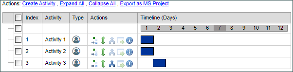
For now, we don't actually need Activities 2 or 3, so let's delete them. To delete the activities, simply check the boxes located to right of each activity, which will highlight them.
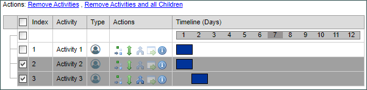
Next, click the Remove Activities link to delete the activities. When you do a confirmation dialog box will appear. Click the OK button to confirm the deletion, and our Process Timeline will now only have one activity.
When you create a Timeline Activity, by default Process Director creates an activity of the User activity type. A User activity is one that directly assigns an action to a user, or a group of users. If you double click on the text that says Activity 1, you'll open the Properties dialog box for the activity.

We will go into detail about the various properties that are available to you, but for now, let's concentrate on a couple of default settings. As you can see, the Name property is "Activity 1", which Process Director creates by default. The Activity Type is User, which is the activity type that Process Director always creates, because it is the most common type of activity. Finally, if we click on the Participants tab, we can see that this activity is assigned to Timeline Initiator, that is, the person who starts this Process Timeline.
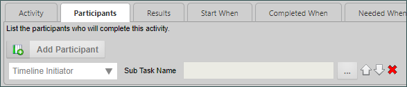
We'll be changing all of these properties in the next lesson, but we're going to keep them for now because, even with the default settings, and only one activity, we actually have a working Timeline. Click the OK button at the top right of your screen to save and close the Process Timeline.
At this point we have the two fundamental elements that are always required to create a functioning application: a Form, and a Process Timeline. Now, we have to hook them together to see our bare-bones process run.
The vast majority of the time, a Timeline is started by the submission of a form. In this case, when a student submits a Change of Major request, we want to automatically start the approval Timeline for that request. To make this happen we need to configure our Change of Major Request form.
Navigate to the "Student Exercise Folder" that contains our form, and click on the form name to open the form definition. Once you do so, click on the Form Definition’s Properties tab to view the properties page.
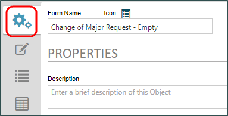
The Properties tab contains an Options section which will open when you click on it. The very first property in the Options section is Automatically start this process after Form is submitted (optional). This is the property we need to set to ensure that submitting the form starts our process.
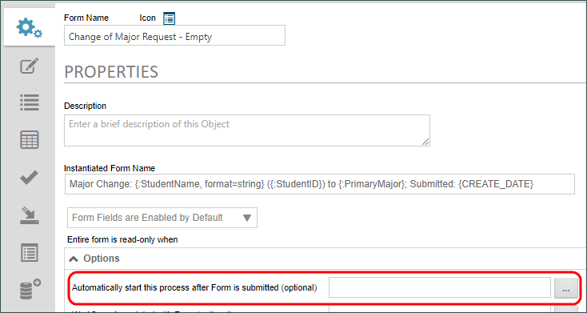
On the right side of the property is a build button,  Click this button to open the Choose Process dialog box. This dialog displays a folder list we can use to navigate to our Student Exercise Folder and display the Process Timeline we just created.
Click this button to open the Choose Process dialog box. This dialog displays a folder list we can use to navigate to our Student Exercise Folder and display the Process Timeline we just created.
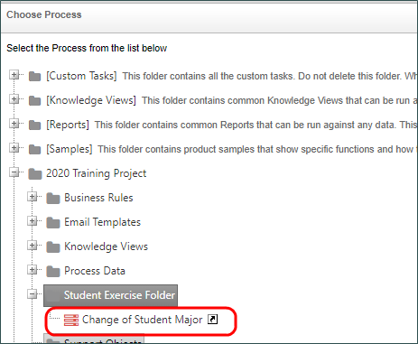
Click on the Change of Student Major timeline to associate it with the form. Once you do so the dialog box will close and the Timeline will appear in the property box for the form.
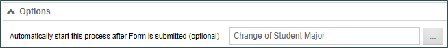
Now that we've made this change, we can click the Update and Run item from the button menu at the top right of the screen.
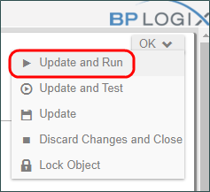
You can fill out the form, and submit it by clicking the OK button. When you click the OK button, you'll notice that the form doesn't go away. Instead it reloads immediately. This is because we kept the default Participant value in the Timeline Activity, which was Timeline Initiator. By submitting the form, you became the Timeline Initiator, and the activity was assigned to you automatically. Obviously, if we had chosen a different participant, the form would have submitted, and the activity would have been assigned as a task to whoever we had chosen as the participant.
Notice that, at the bottom of the Form, is a simple button that says "Complete". Click the button to complete the activity, and close the form.
As you can see, our Form and Timeline are now connected, and we can test our process as often as we'd like while we continue to edit the Process Timeline.
As mentioned previously, most of the time, a process begins when a form is submitted. This isn't always true, however. Sometimes a process can be started by some automated activity, We won't go into the details of how that might happen at this point, but, if we reopen the Process Timeline we just created, we see that it also has an Options section. When we open the options section, we can see a Form for Timeline (will attach Form instance if needed) property that works just like the corresponding property on the form.
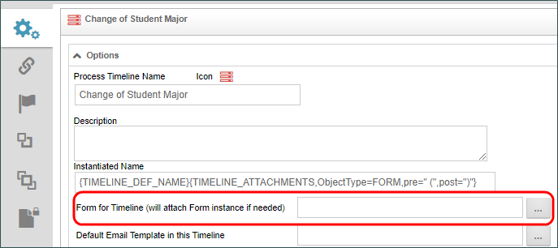
Just as we attached the Timeline to our Form Definition, we can use this property to attach the Form definition to the Process Timeline. When we do so, any time the Timeline is started, it will automatically include the form. So, no matter how the process starts, you can always ensure that the Form and Timeline are linked. More importantly, by choosing the form for the Process Timeline, in the Timeline Definition, we will make our job of configuring the Timeline much easier.
In a future lesson, we will use the value of some of our form fields to determine how our Process Timeline works. Configuring the Form for Timeline property will set our form as the default form definition, and will automatically display the form fields we want, when we need them.
In this lesson, we covered how to create a new Process Timeline, add and delete Timeline Activities, and how to link the Form and Timeline definitions together to create a basic, functioning application. In our next lesson, we will go back to our Timeline Definition, and begin modeling our Change of Major approval process.